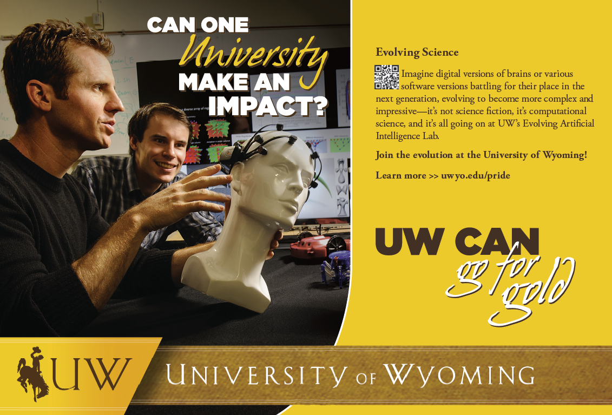

Joost Huizinga
Research Scientist at OpenAI Press
PressThe following articles have been posted on various news outlets: Go-Explore for playing text-based games - Januari 2020
Venturebeat.com
Quality-diversity, Novelty Search, Go-Explore, and more - November 2019
Quantamagazine.org
Go-Explore Initial Release - November 2018
Venturebeat.com
Medium.com
Uber.com
Interview with UW journalist - December 2013
Phys.org
ScientificComputing.com
Uwyo.edu
Featured in an UW commercial - November 2013
